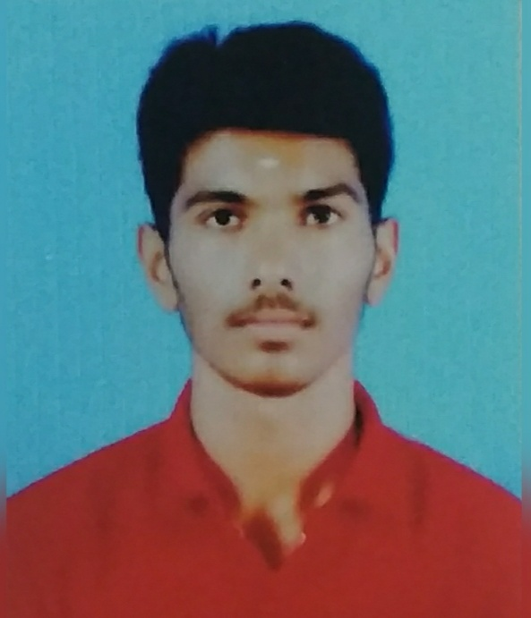

Rajesh kanna R
6/220,N.pudhuroad,Nagayakottai(po),Gujiliamparai(tk), Dindigul.
rkathiravan889@gmail.com
Objective
To enhance my professional skills, capabilities and knowledge in an organization which recognizes the value of hard work and trusts me with responsibilities and challenges.
Education
| course | college/school | year | percentage |
|---|---|---|---|
| sslc | MSP SNHSS | 2015 | 83% |
| HSC | MSP SNHSS | 2017 | 64% |
| BCA | GTNarts college | 2020 | 69% |
Skills
Computer languages known : c,c++,python,php,java,c#,DBMS,html .
Software skills : Develope programs .
Office suite : Ms office work,Corel draw,Adobe photo shop Problem solving, Team building , Decision making, I has a ability to organize the function in a best way.
Personal Details
Date of Birth : 09/05/2000
Marital Status : Unmarried
Nationality : Indian
Personal Profile
Father's name : Ragunathan
Mother's name : alammal
Father's occupation : farmer
Blood group : o+
Projects
Instead of face to face meetings,Mentoring system uses asynchronous, electronic communications to establish and support the relationship between mentor and the student using virtual mode. Mentoring uses computerized medium to transfer knowledge and skills from teacher to student.
Achievements & Awards
District level 1st prize in yoga competition
Languages Known
Tamil(read,write,speak)
English(read,write,speak)
Interests
Web developing
Coding
Program coding and developing
Strength
Good communicator
Positive thinking
Hard worker
Time management
Leadership
More responsible
Hobbies
Playing outdoor games
Reading books
Declaration
I hereby declare that above furnished details are true to my knowledge and belief